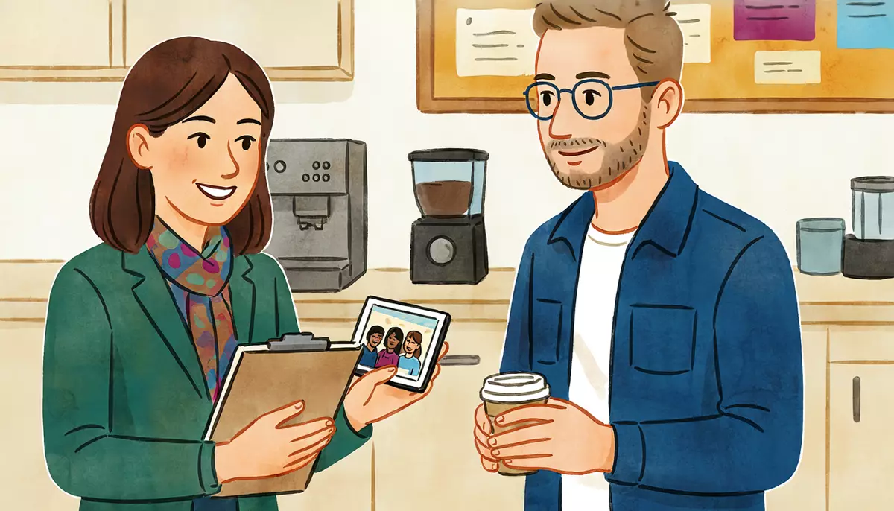

I can describe family, friends and colleagues.Goal of this lesson · CEFR Sustained monologue: describing experience A2; Conversation A2
Paso 1 de 8
EscuchaListen
Listen to the conversation, then answer the questions.

Break time at the Escuela de Idiomas Puente. In the staff room, Rocío shows Alex a photo of the school's teachers on her phone. tú (Rocío and Alex, colleagues); Doña Lupita says tú to Alex, Alex says usted to her
First listen without the text. Press Escuchar todo and answer the first question. Then show the Spanish text and listen again.
ChooseWho is in the photo?
Your answer:
R
RocíoMira, Alex: es la foto de la comida de maestros. ¿Ya conoces a todos?Look, Alex: it's the photo from the teachers' lunch. Do you know everyone yet?
A
AlexA ver… No, todavía no. ¿Quién es el alto de lentes?Let's see… No, not yet. Who's the tall guy with glasses?
R
RocíoEs Ernesto, el maestro de francés. Es muy serio, pero es muy buena onda. Todos le decimos «el Flaco».That's Ernesto, the French teacher. He's very serious, but he's really nice. We all call him "el Flaco" (Skinny).
A
Alex¿Y ella? ¿La de pelo chino?And her? The one with curly hair?
R
RocíoEs Paty. Da clases de inglés a los niños. Es bajita, muy alegre y muy platicadora.That's Paty. She teaches English to the children. She's short, very cheerful and very chatty.
A
Alex¡Ah, sí! Es muy simpática. Pero hoy no está en la escuela, ¿verdad?Oh, yes! She's very nice. But she isn't at school today, is she?
R
RocíoNo, está enferma. Tiene gripa, pobre.No, she's sick. She has the flu, poor thing.
A
Alex¿Y el señor de barba, al lado de Paty?And the man with the beard, next to Paty?
R
RocíoEs Sergio, de Guadalajara. Normalmente es muy tranquilo, pero esta semana está muy estresado por los exámenes.That's Sergio, from Guadalajara. He's normally very calm, but this week he's very stressed because of the exams.
A
Alex¡Pobre! Yo también estoy un poco cansado esta semana.Poor guy! I'm a bit tired this week too.
R
Rocío¿Y esta señora de pelo largo? ¿Sabes quién es?And this woman with long hair? Do you know who she is?
A
AlexMmm… ¿eres tú? ¡Qué diferente estás con el pelo largo!Hmm… is it you? You look so different with long hair!
R
Rocío¡Ja, ja! Sí, soy yo, hace dos años. Oye, ¿y tú a quién te pareces: a tu papá o a tu mamá?Ha ha! Yes, it's me, two years ago. Hey, and who do you look like: your dad or your mom?
A
AlexFísicamente me parezco a mi papá: es alto, delgado y tiene barba, como yo. Pero de carácter soy como mi mamá: muy tranquilo y un poco tímido.Physically I look like my dad: he's tall, thin and has a beard, like me. But in personality I'm like my mom: very calm and a bit shy.
R
Rocío¿Tímido tú? ¡Pero si en clase hablas todo el tiempo!You, shy? But you talk all the time in class!
A
AlexBueno, en clase es diferente. ¡Es mi trabajo!Well, in class it's different. It's my job!
1
ChooseListen again and answer.
What is Paty like, and why isn't she at school?
Why is Sergio stressed this week?
Who does Alex look like?
En la cocina: Doña Lupita's daughters
That evening, Doña Lupita tells Alex that her daughter Rosa is coming from Los Angeles.
L
Doña LupitaAlex, mijo, la próxima semana viene mi hija Rosa de Los Ángeles. ¡Ya quiero verla!Alex, dear, next week my daughter Rosa is coming from Los Angeles. I can't wait to see her!
A
Alex¡Qué bien, doña Lupita! ¿Cómo es Rosa?That's great, Doña Lupita! What's Rosa like?
L
Doña LupitaEs la menor. Es morena, de ojos cafés, y tiene el pelo lacio y muy largo. Se parece mucho a mí, pero es más alta.She's the youngest. She has brown skin and brown eyes, and very long straight hair. She looks a lot like me, but she's taller.
A
Alex¿Y de carácter?And her personality?
L
Doña LupitaEs muy trabajadora y muy cariñosa, pero un poco desordenada. ¡Siempre pierde las llaves!She's very hardworking and very affectionate, but a bit messy. She always loses her keys!
A
Alex¿Y Carmen? ¿También se parece a usted?And Carmen? Does she look like you too?
L
Doña LupitaNo, Carmen se parece a su papá: es güera, de ojos verdes, y muy seria. ¡Pero las dos son muy buenas hijas!No, Carmen looks like her dad: she's fair, with green eyes, and very serious. But they're both very good daughters!
1
ChooseAnswer the questions: En la cocina: Doña Lupita's daughters
Who does Rosa look like?
What is Carmen like?
Paso 2 de 8
FíjateNotice
Read how it works. Play the examples and repeat them aloud.
Describing people: es alto, tiene el pelo chino
Use ser + adjective for build and coloring (es alto, es bajita, es morena), tener for hair, eyes and beard (tiene el pelo chino, tiene los ojos cafés, tiene barba) and usar for glasses (usa lentes). To point someone out, use el / la + a description: el alto de lentes (the tall guy with glasses), la de pelo chino (the one with curly hair). Adjectives agree with the person: alto, alta, altos, altas.
verb
examples
ser
Es alto / bajo / delgado. Es moreno / güero.
tener
Tiene el pelo chino / lacio / largo / corto. Tiene los ojos cafés / verdes. Tiene barba.
usar
Usa lentes.
el / la … de
el señor de barba, la de pelo chino, el alto de lentes
From the conversation:
A ver… No, todavía no. ¿Quién es el alto de lentes?Let's see… No, not yet. Who's the tall guy with glasses?
Es Paty. Da clases de inglés a los niños. Es bajita, muy alegre y muy platicadora.That's Paty. She teaches English to the children. She's short, very cheerful and very chatty.
Es la menor. Es morena, de ojos cafés, y tiene el pelo lacio y muy largo. Se parece mucho a mí, pero es más alta.She's the youngest. She has brown skin and brown eyes, and very long straight hair. She looks a lot like me, but she's taller.
Mexican words: güero, güera = fair-skinned or blond; moreno, morena = brown-skinned or dark-haired; chino = curly (hair), lacio = straight; eyes are cafés (brown). Bajito, bajita is a kind way to say short.
Ser or estar? Es tranquilo / está estresado
Use ser for what a person is like in general: looks and character (es tranquilo, es alegre). Use estar for how someone is now, a state that can change: estar cansado, enfermo, estresado, contento, nervioso. Time words help: normalmente goes with what someone is like; hoy, esta semana, ahorita often go with estar.
ser: what someone is like
estar: how someone is now
Sergio es tranquilo.
Esta semana está estresado.
Paty es alegre.
Hoy está enferma.
Alex es tímido.
Alex está cansado.
From the conversation:
No, está enferma. Tiene gripa, pobre.No, she's sick. She has the flu, poor thing.
Es Sergio, de Guadalajara. Normalmente es muy tranquilo, pero esta semana está muy estresado por los exámenes.That's Sergio, from Guadalajara. He's normally very calm, but this week he's very stressed because of the exams.
¡Pobre! Yo también estoy un poco cansado esta semana.Poor guy! I'm a bit tired this week too.
Mmm… ¿eres tú? ¡Qué diferente estás con el pelo largo!Hmm… is it you? You look so different with long hair!
Some adjectives change meaning: es aburrido (he's boring) / está aburrido (he's bored); es listo (he's clever) / está listo (he's ready).
Parecerse a: to look like, to take after
me parezco · te pareces · se parece · nos parecemos · se parecen + a
Parecerse a + person = to look like or take after someone. It's reflexive, like the routine verbs in 7.1, and yo is irregular: me parezco. Don't forget a: me parezco a mi papá. For character, you can also say soy como mi mamá (I'm like my mom).
From the conversation:
¡Ja, ja! Sí, soy yo, hace dos años. Oye, ¿y tú a quién te pareces: a tu papá o a tu mamá?Ha ha! Yes, it's me, two years ago. Hey, and who do you look like: your dad or your mom?
Físicamente me parezco a mi papá: es alto, delgado y tiene barba, como yo. Pero de carácter soy como mi mamá: muy tranquilo y un poco tímido.Physically I look like my dad: he's tall, thin and has a beard, like me. But in personality I'm like my mom: very calm and a bit shy.
No, Carmen se parece a su papá: es güera, de ojos verdes, y muy seria. ¡Pero las dos son muy buenas hijas!No, Carmen looks like her dad: she's fair, with green eyes, and very serious. But they're both very good daughters!
Paso 3 de 8
PracticaPractice
Do the exercises in order. They get freer as you go.
1
ChooseSer or estar? Choose the right form.
Mi hermano ___ muy alto. in general
Hoy no voy a trabajar: ___ enferma.
Rocío ___ de Monterrey.
Los alumnos ___ nerviosos por el examen.
Diego ___ muy simpático.
¡Uf! Esta semana ___ muy cansado.
2
Type the missing wordsMake the adjective agree.
Mis hermanas son muy . (alto)
My sisters are very tall.
Carmen es , de ojos verdes. (güero)
Carmen is fair, with green eyes.
Valentina tiene los ojos . (café)
Valentina has brown eyes.
Mis primos son muy . (trabajador)
My cousins are very hardworking.
Paty es y muy platicadora. (bajito)
Paty is short and very chatty.
Mi mamá tiene el pelo . (chino)
My mom has curly hair.
3
Listen and chooseThree people describe someone. Listen and answer.
What is Fernanda like?
Show what they say
Diego: Mi hermana Fernanda tiene quince años. Es alta y delgada, y tiene el pelo lacio y muy largo. Es muy inteligente, pero un poco tímida.
What do we know about Pablo?
Show what they say
Mariana: Mi hermano Pablo se parece a mi papá: es moreno, tiene el pelo chino y usa lentes. Es muy divertido.
Don Chuy's wife is…
Show what they say
Don Chuy: Mi esposa es chaparrita, muy alegre y muy trabajadora. ¡Es el corazón de la fonda!
4
Type the missing wordsComplete with parecerse.
Yo me a mi mamá.
I look like my mom.
¿Tú te a tu papá?
Do you look like your dad?
Rosa se mucho a doña Lupita.
Rosa looks a lot like Doña Lupita.
Mi hermano y yo no nos nada.
My brother and I don't look alike at all.
Mis primas se parecen su abuela.
My cousins look like their grandmother.
5
Put the words in orderPut the words in order.
My sister has curly hair.
Paty is sick today.
Who do you look like?
6
Say it in SpanishNow you. Say it in Spanish (or type it).
Say your brother is tall and thin.
Mi hermano es alto y delgado.
Say your mom has curly hair and brown eyes.
Mi mamá tiene el pelo chino y los ojos cafés.
Say your friend (a woman) is very nice, but today she's tired.
Mi amiga es muy simpática, pero hoy está cansada.
Say you look like your dad.
Me parezco a mi papá.
Ask a friend who he looks like.
¿A quién te pareces?
Ask who the tall guy with glasses is.
¿Quién es el alto de lentes?
7
Your own sentencesDescribe someone you know.
Write 4–5 sentences about a friend, a relative or a colleague: what he or she looks like, what he or she is like, who he or she looks like, and how he or she is these days.
Show a model answer
Mi amiga Sarah es alta y delgada. Tiene el pelo chino y los ojos verdes. Es muy divertida y un poco desordenada. Se parece mucho a su mamá. Esta semana está muy contenta: tiene un trabajo nuevo.
Check your answer:
Paso 4 de 8
PalabrasWords
Listen to each word and repeat it. Then do the quick check.
¿Cómo es? El físicowhat someone looks like
alto, altatall
bajo, baja; bajito, bajitashort
delgado, delgadathin, slim
moreno, morenabrown-skinned; dark-haired
güero, güerafair-skinned; blond (Mexico)
el pelo chinocurly hair (Mexico)
el pelo laciostraight hair
los ojos cafésbrown eyes
la barbabeard
usar lentesto wear glasses
¿Cómo es? El carácterpersonality
serio, seriaserious
alegrecheerful
platicador, platicadorachatty
tímido, tímidashy
tranquilo, tranquilacalm, easy-going
trabajador, trabajadorahardworking
cariñoso, cariñosaaffectionate
buena ondanice, cool (Mexico, informal)
¿Cómo está?how someone is now
cansado, cansadatired
enfermo, enfermasick
estresado, estresadastressed
nervioso, nerviosanervous
tener gripato have the flu, a cold (Mexico)
parecerse a (me parezco)to look like, to take after
Mariana asks Alex for a favor: to meet her brother Pablo at the bus station. Alex has never seen him.
Email
De: Mariana Ortiz
Para: Alex Morgan
Asunto: ¡Un favor! Mi hermano llega el viernes
¡Hola, Alex!
Te escribo para pedirteask you un favor enorme. Mi hermano Pablo llega a la ciudad el viernes 4 de diciembre, en el camión de las 6:40 de la tarde, a la TAPO. Yo salgo del trabajo a las ocho y no puedo ir por élgo and get him. ¿Puedes ir tú?
Pablo tiene diecinueve años. Es alto y muy delgado, tiene el pelo chino y largo, y usa lentes. Se parece mucho a mi papá. Va a llevarwear; carry una chamarra roja y su guitarra: ¡siempre lleva su guitarra!
De carácter es un poco tímido al principioat first, pero es muy buena onda y muy divertido. Ahorita está un poco nervioso, porque es su primera vez solo en la Ciudad de México.
Mil gracias. ¡Te debo unaI owe you one!
Mariana
Words with a dotted underline have a translation: tap or hover.
1
ChooseAnswer the questions about the text.
How will Alex recognize Pablo?
What is Pablo like?
Why is he nervous?
When and where does Pablo arrive?
Paso 6 de 8
CulturaCulture
Read about the culture behind the language.
Güero, flaco, chaparrita: nicknames with love, and with care
Mexicans often call people by a physical feature, with affection: güero, güera (fair-skinned or blond), flaco, flaca (skinny), gordo, gorda (chubby; also a very common pet name between couples: ¿Qué quieres cenar, gordo?), chaparro, chaparrita (short), chino, china (curly-haired). The diminutive softens them: gordita, flaquito, chaparrita. Among family and close friends they are usually signs of affection, not insults: a whole office may call a colleague el Flaco.
Market and street vendors also call customers güero, güerita, joven or marchante, whatever they look like. It's a friendly way to get your attention (¿Qué le damos, güerita?), not a description.
But context matters. Words about weight and skin color can hurt, especially from someone who doesn't know you well. Describing people by skin color (moreno, güero) is everyday speech in Mexico, yet color is also tied to inequality: INEGI's 2016 social-mobility survey found that, on average, people with darker skin tones had less schooling and lower-paid jobs than people with lighter skin. As a learner, use neutral descriptions (es alto, usa lentes, tiene el pelo chino, la de la chamarra roja) and wait until people use a nickname with you before you use one with them.
Elsewhere: Nicknames change from country to country. In Colombia, a blond person is mono, mona; in Venezuela, catire, catira. In Spain, curly hair is pelo rizado, and chino only means Chinese.
Sources
El Colegio de México, Diccionario del español de México (DEM, online): entries «güero», «chino», «chaparro».
INEGI, Módulo de Movilidad Social Intergeneracional (MMSI) 2016: results by skin tone (published 2017).
1
ChooseCheck: what did you learn?
A fruit seller at the market says ¿Qué le damos, güerita? to a woman with black hair. Why?
Paso 7 de 8
Tu turnoYour turn
Now use it: do the role play, then write.
Role play: Who's in the photo?
At a café, Mariana sees a photo of your friends or family on your phone. Describe two people: what they look like, what they're like, and how they are these days. Use tú.
You
Say who the people in the photo are.
Describe one person's looks (es…, tiene…, usa…).
Describe his or her character with ser.
Say how someone is these days with estar.
Say who you look like (me parezco a…).
Mariana
Asks who is in the photo.
Points to one person: «¿Y la de pelo chino?»
Asks if you look like her or him.
Asks what your dad or mom is like.
Jokes about your character.
1. Listen to a model
One way the conversation could go. Listen, then try it yourself without looking.
M
Mariana¡Qué bonita foto! ¿Quiénes son?What a nice photo! Who are they?
A
AlexSon mis amigos de Chicago. El alto de barba es Sam: es muy divertido y un poco desordenado.They're my friends from Chicago. The tall guy with the beard is Sam: he's really fun and a bit messy.
M
Mariana¿Y la de pelo chino?And the one with curly hair?
A
AlexEs mi hermana Emily. Es muy alegre y muy platicadora. Ahorita está muy contenta: tiene un trabajo nuevo.That's my sister Emily. She's very cheerful and very chatty. She's very happy right now: she has a new job.
M
Mariana¿Y tú te pareces a ella?And do you look like her?
A
AlexNo mucho. Ella se parece a mi mamá: es bajita y tiene los ojos azules. Yo me parezco a mi papá.Not much. She looks like my mom: she's short and has blue eyes. I look like my dad.
M
Mariana¿Y cómo es tu papá?And what's your dad like?
A
AlexEs alto, delgado y usa lentes, como yo. Es muy trabajador y un poco serio.He's tall, thin and wears glasses, like me. He's very hardworking and a bit serious.
M
Mariana¡Como tú!Like you!
A
Alex¿Yo, serio? ¡Para nada!Me, serious? Not at all!
2. Record yourself
Say your part aloud (pause the model after each of Mariana's lines), or answer the questions in the role card. Then play it back and compare.
3. Practice with an AI partner (optional)
Copy this prompt into ChatGPT or Claude, switch on voice mode, and have the conversation. It plays Mariana.
Stuck? Say «ayuda» and it gives you a hint in English, then carries on.
Finished? Say «terminamos» and it gives you feedback in English: what you did well, your mistakes, and useful phrases for next time.
Let's practice Spanish (Mexican Spanish, level A2). You are Mariana, 28, an architect from Puebla living in Mexico City, my friend from the language exchange. Use "tú".
We're at a café and I show you a photo of my friends or family on my phone. About your family: your brother Pablo (19, music student) is tall and very thin, with long curly hair and glasses, and looks like your dad; your sister Lucía (30) is short and cheerful, like your mom.
Rules:
- Speak only Spanish, short turns (1-2 sentences), simple language for an A2 learner.
- Ask me who is in the photo, then point to people ("¿Y el alto?", "¿Y la de pelo chino?") and ask what they look like, what they're like, how they are these days and who I look like. One question at a time. When I ask, describe your own family in two sentences.
- You play only this one person. Never speak as anyone else, and don't describe what other people say or do.
- If I make a mistake, don't stop me: repeat what I said correctly in your answer (for example: if I say "Mi hermana está muy alta", you say "Ah, tu hermana es muy alta"; if I say "Me parezco mi papá", you say "Ah, te pareces a tu papá".).
- Once, ask an unexpected question: "¿Y tienes un apodo?" (explain "apodo" = nickname if I don't understand).
- When I say "ayuda", step out of the role play for a moment: in English, give me a short hint about what I could say next, with one or two short Spanish options, then continue the role play where we were.
- When I say "terminamos", stop the role play and give me feedback in English: 3 things I did well, up to 3 mistakes with corrections, and 3 useful phrases for next time.
Start now: say "¡Qué bonita foto! ¿Quiénes son?"
Writing: An important person
Write a short post for the language-exchange group about a person who is important to you: who he or she is, looks, character, who he or she looks like, and how he or she is these days.
60–90 words.
Show a model answer
Doña Lupita es muy importante para mí en México. Tiene setenta y un años y es de Oaxaca. Es bajita y morena, y ya tiene canasgray hair. Es muy cariñosa, muy trabajadora y un poco platicadora. ¡Y cocina muy rico! Tiene tres hijos y cinco nietos. Su nieto Diego se parece mucho a ella: es moreno y muy alegre. Esta semana doña Lupita está muy contenta, porque su hija Rosa viene de Los Ángeles.
Check your text:
Paso 8 de 8
¿Lo logré?Did I do it?
Check yourself against the goal of the lesson.
Read each statement and be honest: anything marked casi or todavía no goes into Repaso so it comes back soon.
I can describe what someone looks like: build, hair, eyes, glasses.
I can describe someone's character.
I can choose ser or estar with adjectives: es tranquilo / está cansado.
I can say who I look like with me parezco a….
I can understand people describing their family, friends and colleagues.